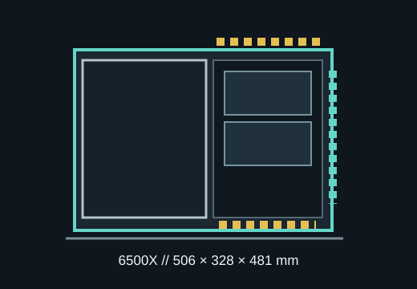

[ MODEL IDENTIFICATION // CORSAIR 6500X ]
CORSAIR 6500X
A glass-front dual-chamber ATX mid-tower with 400 mm GPU length, 190 mm cooler height and three 360 mm radiator locations.

MODEL DISTINCTION: This is the 6500X glass-front variant, not the airflow-front 6500D Airflow. The front is glass and has no radiator position.
Dimensions & fit specifications
| External dimensions | 506 × 328 × 481 mm (H × W × D); approximately 17 kg, as listed for the 6500X chassis. |
|---|---|
| Motherboards | Mini-ITX, microATX, ATX and E-ATX up to 305 × 277 mm; reverse-connector board compatibility includes ASUS BTF, MSI Project Zero and Gigabyte Project Stealth. |
| GPU / CPU cooler / PSU | GPU length up to 400 mm; CPU cooler height up to 190 mm; ATX PSU length up to 225 mm. |
| Radiators | Top and bottom each support up to 360/280/240 mm; side supports up to 360/240 mm; rear supports 140/120 mm. Front is glass: no front radiator support. |
| Drive mounts | Two 3.5-inch HDD positions and four 2.5-inch SSD mounts in the second chamber; the drive/PSU chamber is separated from the display side. |
| Expansion | Eight horizontal slots; four additional vertical positions require the separately sold vertical GPU mount. Three included 120 mm fans vary with package/SKU. |
Compatibility & preservation
Because the 6500X uses a solid-glass front, its supported liquid-cooling positions are top, bottom and side—not the front. Radiator and fan stacks can conflict with a long GPU, side cable channel or board connectors. The 400 mm GPU ceiling should be checked with side-radiator hardware installed.
- Retain the second-chamber panels, drive trays, reverse-connector grommets, filters and proprietary trim.
- Plan modular PSU cable routing and GPU lead bend before closing the cable chamber.
- Do not apply 6500D Airflow front-radiator assumptions to the 6500X glass-front chassis.
Manufacturer sources
- CORSAIR — 6500X case product specificationsManufacturer GPU/cooler/PSU limits, radiator positions, board compatibility and case features.
- CORSAIR — 6500 Series quick-start guideOfficial chassis assembly and configuration guide for the 6500 Series.